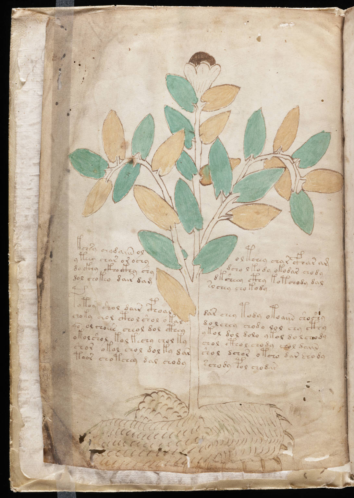

f1v
1kchsy chadaiin ololtchey char cfhar am2yteeay char or ochydcho lkody okodar chody3do ckhy ckho ckhy shydksheey cthy kotchody dal4dol chokeo dair damsochey chokody5potoy shol dair cphoaldar chey tody otoaiin shoshy6choky chol cthol shol okaldolchey chodo lol chy cthy7qo ol choeee cheol dol ctheyykol dol dolo ykol do lchody8okol shol kol kechy chol kychol cthol chody chol daiin9shor okol chol dol ky darshol dchor otcho dar shody10taor chotchey dal chodyschody pol chodar
